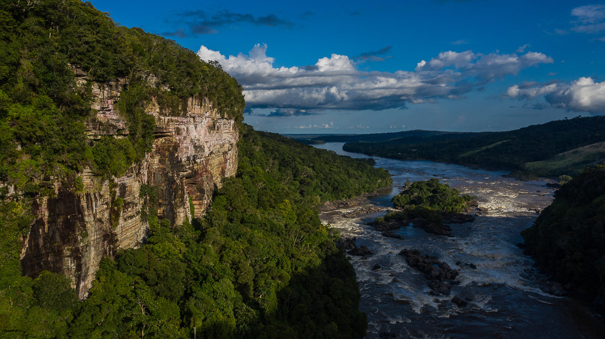
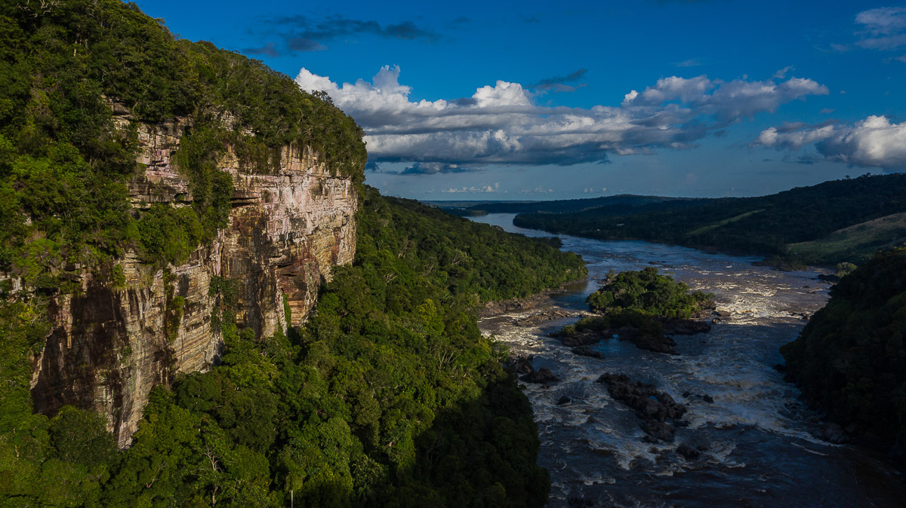
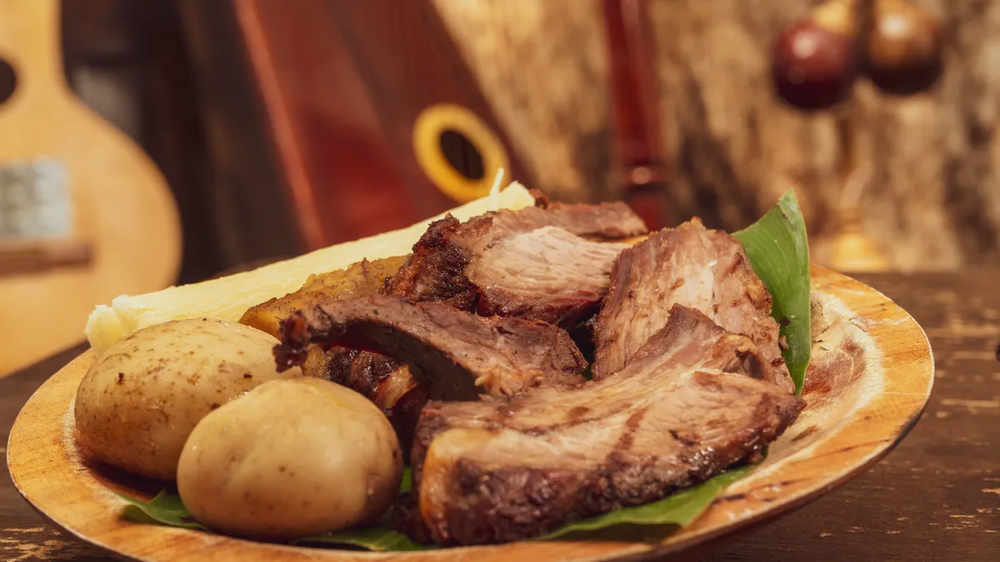
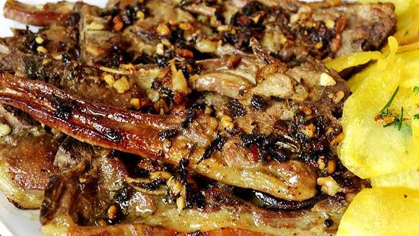
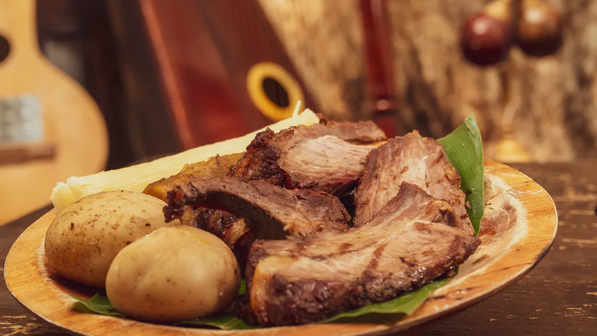
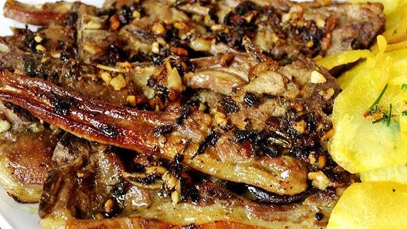

Turismo Vichadense
El departamento de Vichada, ubicado en la región de la Orinoquía colombiana, es un destino que ofrece una riqueza natural y cultural inigualable. A continuación, te presento un recorrido turístico por algunos de sus principales atractivos:
- Parque Nacional Natural "El Tuparro": Este parque, declarado Monumento Nacional y Zona Núcleo de la Reserva de Biosfera por la UNESCO, abarca más de 548.000 hectáreas de sabanas, bosques de galería y ecosistemas acuáticos. Es hogar de una biodiversidad impresionante, incluyendo especies como el delfín rosado y una gran variedad de aves. Además, en el parque se encuentra el imponente Raudal de Maipures, descrito por el naturalista Alexander von Humboldt como la "Octava Maravilla del Mundo".
- Puerto Carreño: Capital del Vichada, esta ciudad se sitúa en la confluencia de los ríos Orinoco y Meta. Es un punto estratégico para la pesca deportiva, especialmente del pavón. Los visitantes pueden disfrutar de atardeceres espectaculares y de la hospitalidad de sus habitantes.
- Serranías de Amaní y Araracuara: Estas formaciones montañosas, aunque menos conocidas, brindan oportunidades para el ecoturismo y la observación de especies endémicas, siendo ideales para los amantes de la naturaleza y la aventura.
- Cumaribo: Considerado uno de los municipios más grandes de Colombia en extensión territorial, Cumaribo es un lugar donde se puede apreciar la riqueza cultural de las comunidades indígenas, como los pueblos sikuani y piapoco. Estas comunidades ofrecen artesanías tradicionales y comparten sus costumbres ancestrales con los visitantes.
 

Vichada es un destino que combina naturaleza, cultura y aventura, ofreciendo a los visitantes una experiencia auténtica y memorable en los Llanos Orientales de Colombia.
Comida Típica
La gastronomía del departamento del Vichada es un reflejo de su riqueza cultural y natural, combinando ingredientes autóctonos con tradiciones ancestrales. A continuación, se destacan algunos de los platos más representativos de la región:
- Mamona o Ternera a la Llanera: También conocida como ternera a la llanera, es una preparación tradicional que implica asar al aire libre cortes de ternera joven, sazonados con sal y especias, hasta alcanzar una textura jugosa y tierna. Se suele acompañar con papa salada, yuca y plátano asado.
- Muchilanga: Este plato es una especie de envuelto hecho con hojas de plátano y relleno de carne y vegetales. Combina sabores y texturas indígenas con técnicas de cocción de la colonización española, ofreciendo una experiencia culinaria única.
- Pescados del Orinoco: Gracias a la riqueza hídrica del Vichada, pescados como el pavón, la cachama y el bagre son fundamentales en la dieta local. Estos se preparan asados, en sopas o en guisos, resaltando el sabor fresco y natural de la región.
- Carnero al Ajillo: Este plato consiste en carne de carnero cocinada con una generosa cantidad de ajo y especias, resultando en una preparación llena de sabor que refleja la influencia de las tradiciones ganaderas de la región.
 

Sector económico Nariñense
El departamento del Vichada, ubicado en la región de la Orinoquía colombiana, posee una economía caracterizada por actividades agropecuarias y extractivas. A continuación, los principales sectores económicos de la región:
- Ganadería
- Agricultura
- Pesca
- Comercio Exterior
- Proyectos de Desarrollo Sostenible
- Actividades Extractivas
En resumen, la economía del Vichada se basa principalmente en la ganadería extensiva y, en menor medida, en la agricultura, la pesca ornamental y actividades extractivas. La baja densidad poblacional y las limitaciones en infraestructura han influido en el desarrollo económico del departamento, aunque iniciativas recientes buscan promover prácticas más sostenibles y eficientes en la región.